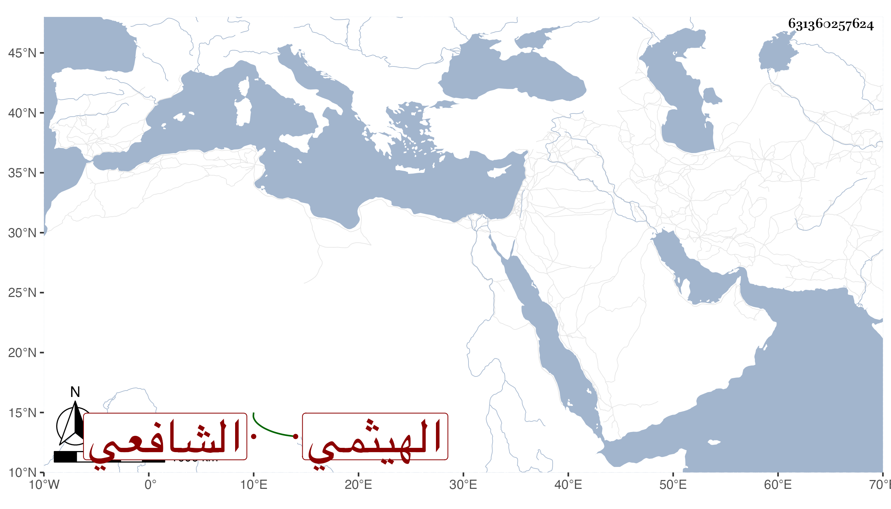

0902Sakhawi.DawLamic.ITO20230111-ara1.EIS1600.631360257624
Biography ID: 631360257624
480
محمد بن علي بن عباس بن صافي بن عبد الرحمن الشمس بن النور بن الزين بن الصفي بن المجد الهيثمي الشافعي ويعرف بابن عباس . ولد سنة سبعين وسبعمائة أو قبلها بمحلة أبي الهيثم وقرأ بها القرآن على أبيه وصلى به والعمدة وأربعي النووي والتبريزي والرحبية في الفرائض والملحة وعرضها على القاضيين العماد الباريني والعز عبد العزيز بن سليم وغيرهما في سنة أربع وثمانين وسبعمائة وبحث على والده في التبريزي والرحبية والملحة . وكان أبوه شاعرا بارعا فولع هو بالنظم ومدح النبي صلى الله عليه وسلم مع كونه شيخا منورا يعرف من النحو ما يصلح به لسانه . وقد لقيه ابن فهد والبقاعي في سنة ثمان وثلاثين وكتبا عنه قصيدة طويلة أولها :
| رق النسيم وهب في الأسحار | وهمى الغمام بوابل الأمطار |
| واهتزت الأغصان تيها بالصبا | وتراقصت طربا على الأشجار |
